RED COLLECTION
SADAFRONIA Merlot
מרלו אדום · קולקציית ההשקהיין אדום עגול וקטיפתי בסגנון אלגנטי, עם אופי פירותי ומבנה מאוזן. מתאים לארוחה, לאירוח ולמתנה.
₪79
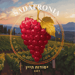
SADAFRONIAיסודות הייןSADAFRONIA · FOUNDATIONS OF WINE
אקו־סיסטם ישראלי חדש שמחבר בין יקב בוטיק, בית יין, אקדמיה, תוכן מקצועי וקהילה.
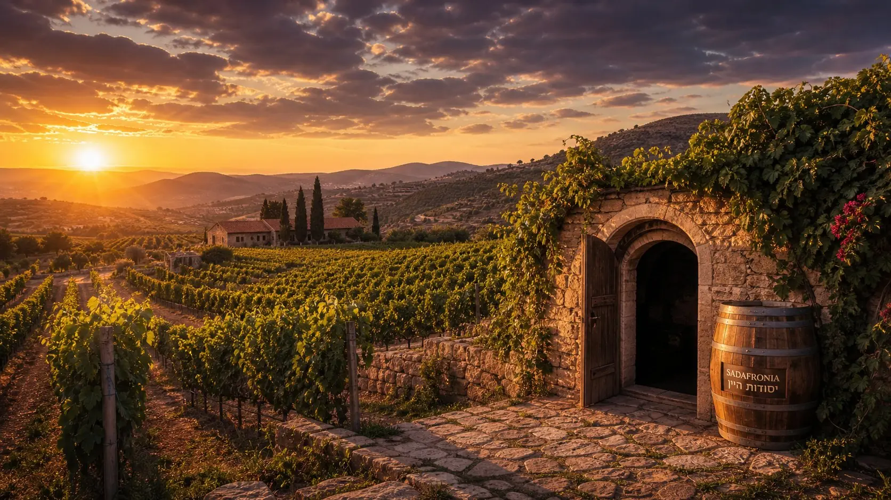
FOUR CORE WORLDS
האקו־סיסטם הרחב כולל גם ייעוץ ואירועים; ארבעת העולמות האלה הם הליבה שמחברת את הכול.
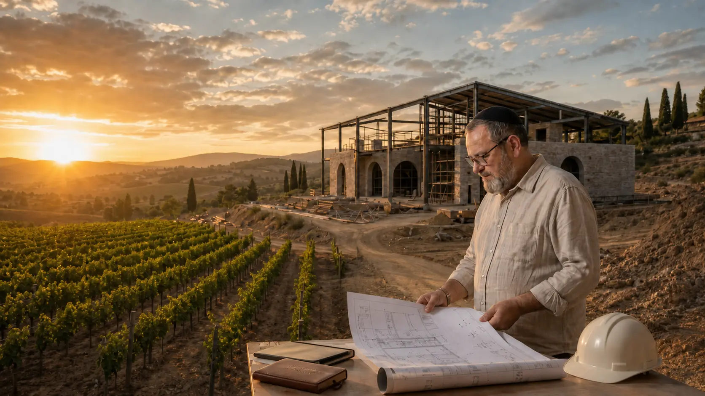
01 · THE WINERYחומר גלם מקומי, דיוק מקצועי וסבלנות.
לגלות את היינות ←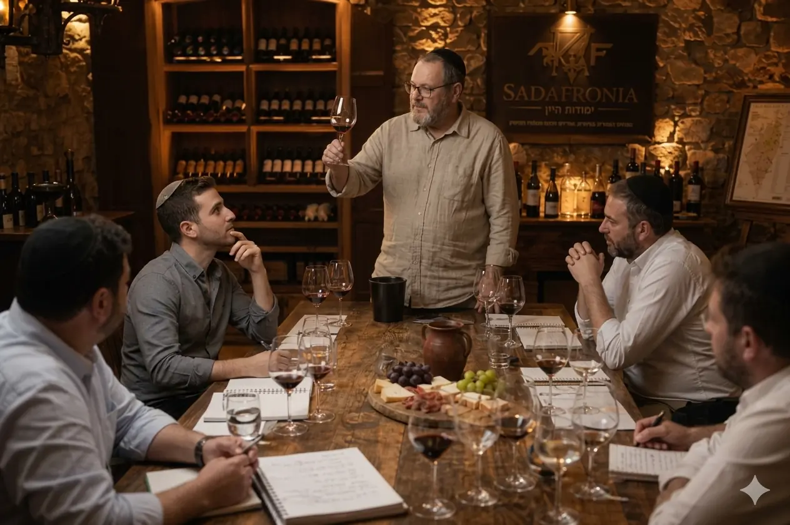
02 · THE WINE HOUSEמטבח, טעימות, ערבי תוכן ואירוח.
להזמנת חוויה ←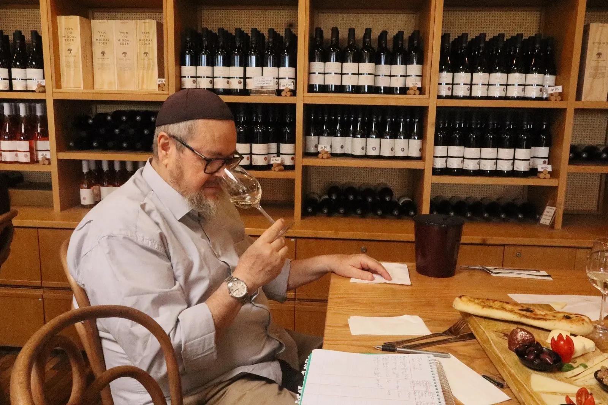
03 · THE ACADEMYלימודי יין מתוך ניסיון אמיתי ביקבים.
למסלולי הלימוד ←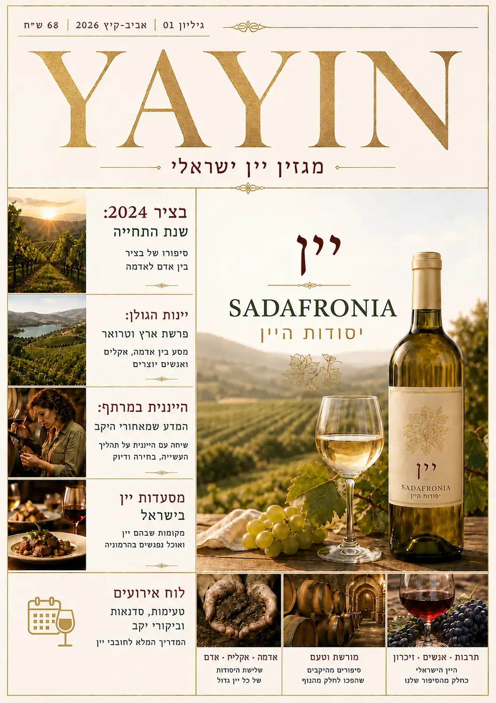
04 · YAYINידע מקצועי, טכנולוגיה ותרבות — בפורמט דיגיטלי חי.
לפתיחת הגיליון ←MASTERCLASS · 2026
קורס הדגל הדיגיטליתוכנית מקצועית, ברורה ומעשית בהובלת דוד דאסה. חומר גלם, תסיסה, מעבדה, יישון, טעימה, בקרת איכות וביקבוק.
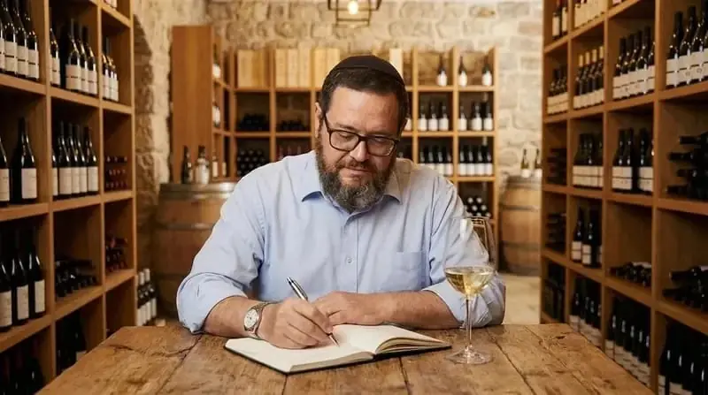
THE SADAFRONIA SELECTION
יין אדום עגול וקטיפתי בסגנון אלגנטי, עם אופי פירותי ומבנה מאוזן. מתאים לארוחה, לאירוח ולמתנה.
סירה בעל עומק, תבלינים וגוף נדיב, שנבנה למנות בשר, לארוחות ארוכות ולמי שמחפש יין עם נוכחות.
שרדונה בהיר, מאוזן ורענן, עם מרקם נעים וסיומת נקייה. מתאים לדגים, גבינות, פסטה ואירוח קיצי.
לבן רענן וארומטי, בעל חומציות מדויקת ואופי עשבוני־הדרי. בחירה טבעית למנות ראשונות ולשולחן הישראלי.
יין ארומטי, פרחוני ונגיש, המשלב רעננות עם מתיקות עדינה. מתאים לאפריטיף, פירות וקינוחים קלים.
רוזה יבש ומעודן בצבע ורוד בהיר, עם פרי אדום רענן וסיומת נקייה. נועד לאירוח, לפיקניק ולמטבח ים־תיכוני.
רוזה Reserve יבש ומעודן, בעל צבע סלמון אלגנטי, פרי אדום רענן וסיומת נקייה. סמל האשכול הוורוד משלים את זהות הסדרה.
מארז טעימה מלא הכולל מרלו, סירה, שרדונה, סוביניון בלאן, מוסקט ורוזה. מתנה מרשימה ומסע שלם בין סגנונות.
קורס דיגיטלי מקצועי ומקיף בהובלת דוד דאסה, מהכרם ועד הבקבוק: חומר גלם, תסיסה, מעבדה, יישון, טעימה ובקרת איכות.
90 דקות של טעימה מודרכת, היכרות עם זנים, ארומות, מבנה היין ועקרונות התאמת אוכל ויין.
חוויה זוגית עשירה ומקצועית הכוללת טעימות מודרכות, ארוחה זוגית, סיפורי יין וכלים שיעזרו לבחור ולטעום בביטחון.
PROFESSIONAL SERVICES
הניסיון שנצבר ביקבים הגדולים ובפרויקטים בישראל ובצרפת הופך לכלים מעשיים עבור יקבים, יזמים, צוותים וחובבי יין.
טעימות מקצועיות, תסיסות, ייצוב, בקרת איכות, סטריליות, בלנדים וליווי לאורך הבציר.
לשירות המלא ←02זרימת עבודה, תשתיות, ציוד, מעבדה, אחסון ותכנון שמתחיל במה שקורה באמת ביום בציר.
לתהליך העבודה ←03חוויה מקצועית ומחברת לקבוצות, ארגונים ומשפחות — מהיכרות ראשונה ועד העמקה.
לבחירת חוויה ←FROM THE ARCHIVE
באתר הישן נבנתה גלריה של תמונות וסרטונים מדלתון, יקבי רמת הגולן ונאות סמדר. כאן היא חוזרת כחלק מהסיפור — לא כאלבום צדדי, אלא כהצצה לעבודה, לטעימה ולידע שנצבר לאורך השנים.
לגלריית התמונות והסרטונים ←SADAFRONIA PODCAST
שיחה מקצועית עם ד״ר ארקדי פפיקיאן על איכות, כרם, תסיסה, תרבות והעתיד של היין הישראלי — לצפייה ישירה בתוך האתר, בלי לעזוב את החוויה.
WHAT PEOPLE REMEMBER
משובים שנאספו בפעילות הקודמת סביב קורסים, סיורים וייעוץ.

״הקורסים של SADAFRONIA שינו לגמרי את הדרך שבה אני מבין יין.״יוסי כהן · קורס מקצועי

״הסיור ביקב היה חוויה בלתי נשכחת.״שרה לוי · סיור יקבים

״ייעוץ מקצועי אונליין — פתר לנו בעיות בזמן אמת.״דניאל פרידמן · ייעוץ מקצועי

״הקורס היה מרתק, מדויק ומקצועי.״אורית ברק · קורס יין

״השירות היה מקצועי, מהיר ומדויק. ממליץ בחום.״רועי מזרחי · ליווי מקצועי

״חוויה יוצאת דופן. למדתי המון ונהניתי מכל רגע.״נועה אלון · סדנת טעימות
THE KNOWLEDGE CELLAR
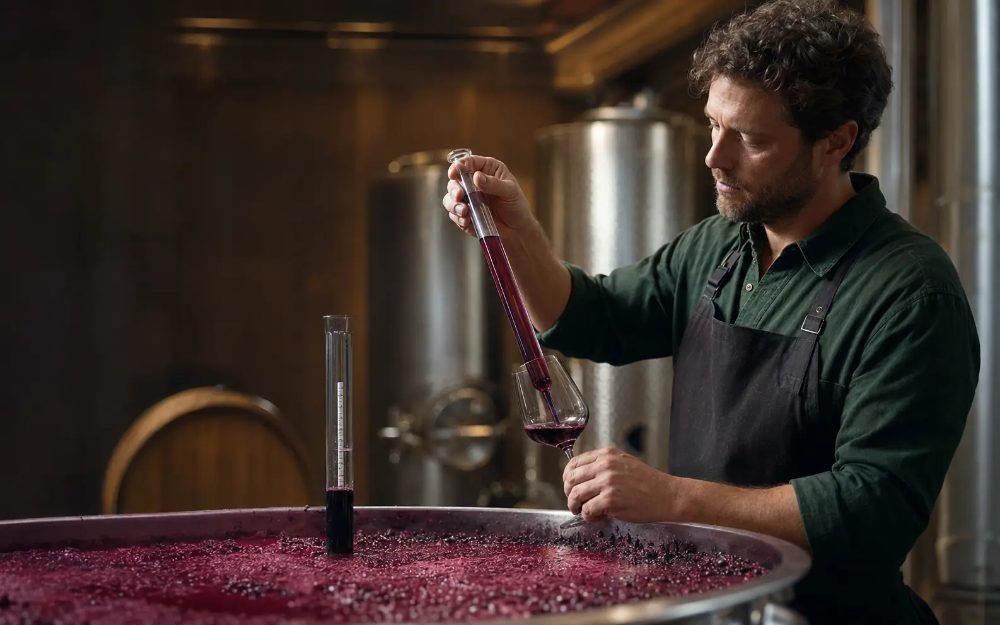
ייצור מקצועימהקליטה ועד הבקבוק: שגרת בדיקות שמונעת טעויות ושומרת על הכיוון הסגנוני של היין.
לקריאה ←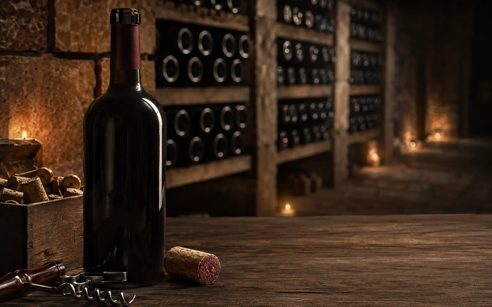
אחסון ויישוןלמה פקק טבעי עדיין נשאר בחירה מרכזית בעולם היין, ואיך עובדים איתו נכון.
לקריאה ←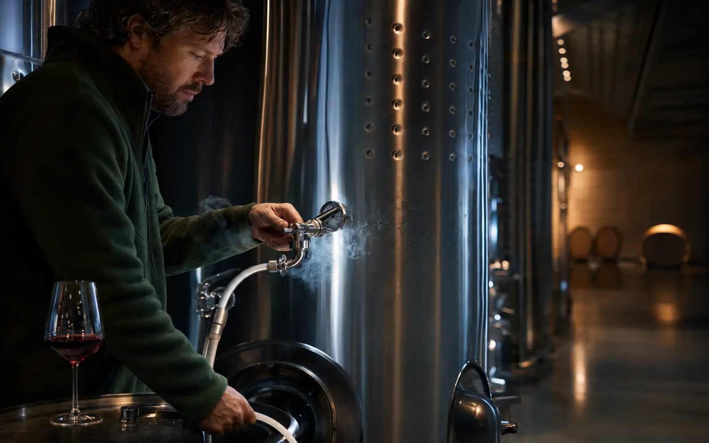
טכנולוגיית ייןחמצן, חנקן ופחמן דו־חמצני: מתי כל גז עוזר, ומתי עבודה לא מדויקת יוצרת סיכון.
לקריאה ←כך בונים רצף יינות שמלווה את הארוחה, מהקידוש ועד המנה האחרונה.
לקריאה ←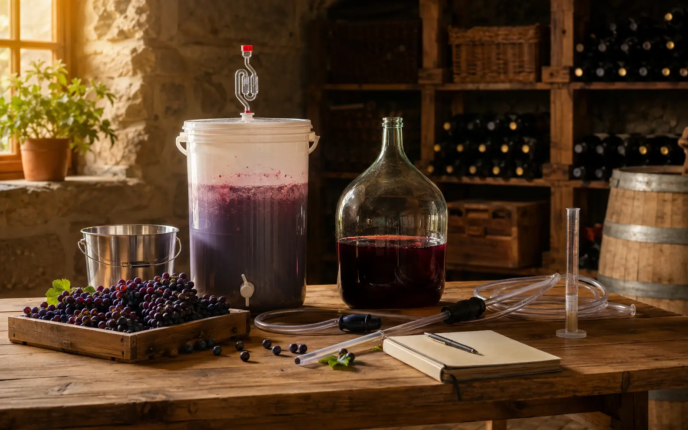
מדריך מעשיהציוד, ההיגיינה והמדידות שהופכים ניסוי ביתי לתהליך מסודר שאפשר ללמוד ממנו.
לקריאה ←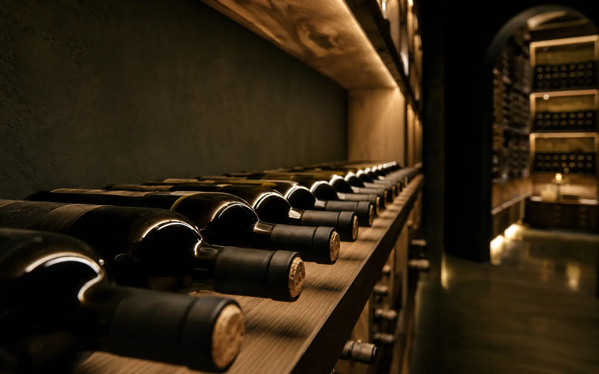
אחסון ויישוןהמגע בין היין לפקק, הטמפרטורה והאור — שלושת התנאים שמכריעים מה יקרה בבקבוק.
לקריאה ←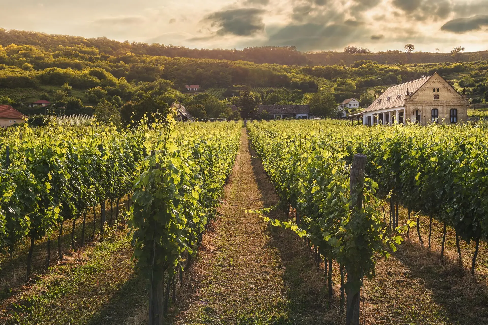
FROM THE JUDEAN HILLS · TO THE WORLD
הצטרפו לעדכוני הבציר, פתיחת בית היין, גיליונות YAYIN והאירועים הקרובים.
או בואו נתחיל שיחה אישית ←